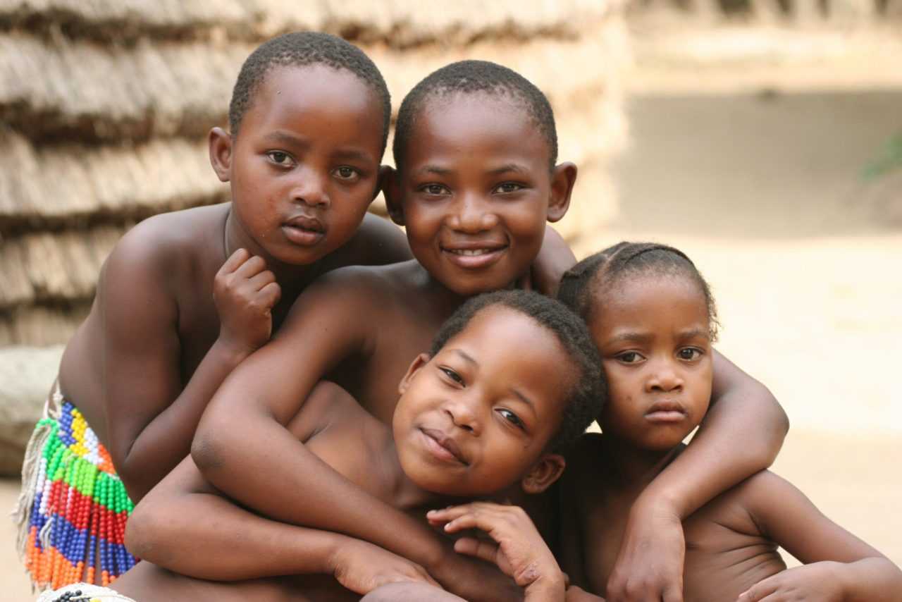

Collaborations for Impact
Civil Society Organizations (CSOs) including Non-Governmental Organizations (NGOs) and professional associations have grown in number and prominence of varying capacity levels and large national organizations. We play a crucial role and respond where women, youth and children’s need demand greater priority.
UNICEF/NPOPC/HTYF – Birth Registration Campaign Enugu State (2018 -2019)
“Networks - the space where we act for the common good”.
Given our program reach, HTYF understands the importance of partnership and networking therefore belongs and works collaboratively with many networks such as Association of OVC NGOs (AONN), Civil Society Scaling Up Nutrition in Nigeria (CS-SUNN), National Association of Nurses and Midwifery in Nigeria (NANMN), Network Against Child Trafficking Abuse and Labour (NACTAL), Civil Society for HIV and AIDS in Nigeria (CisHAN), Society of Gynecologists and Obstetricians in Nigeria (SOGON) among others to enhance our program implementation.

Our Benefeciaries
“Thank you HTYF for bringing VSLA to my community”
Ladi Pwajok
Caregiver of three children, Latya community of Jos-South LGA, Plateau State.
“Thank you. Emmanuel no longer goes to the hospital every time. Now we can spend the hospital money on better nutrition”.
Helen John
Chugwi community
How It Works
Our organization’s ability to deliver services is contingent upon our capability to deliver on our mandate. Therefore, to ensure that we deliver effectively, we must demonstrate our understanding of and compliance to the existing protocols, SOPs and guideline at National and International levels goals; implement strategies to operationalize policies and; possess functional departments, systems and mechanisms all managed by a competent team.
Our policies
HTYF has developed its own organizational policies through the guidance of its partners Save the Children International. These policies give guide to our day to-day activities and programs. Policies in place are Personnel Policy and Staff Conditions of Service; Compendium of Function, Roles and Responsibilities, and Staff Job Descriptions; Procurement Policy; Accounting and Financial Manual; Child Safeguarding Policy; and Gender Policy. OVC SOPs
Our Approaches are as follows
Advocacy
Sensitizations & Mobilization
Strategic Behavioral Change Communication
Resource Mobilization
Public Private Partnership
Economic Strengthening
Capacity building
Our Departments
Monitoring, Evaluation, Accountability, Research & Learning (MEARL)
The MEARL Department is at the heart of our organization’s capacity to manage performance and understand impact of our work. Also, this department is also tasked with the responsibility of communicating and maintaining effective relationships with beneficiaries, donors, potential partners, other stakeholders and the public.
Programs
This is the organizations department responsible for creating/designing and implementing systems (program/project) with inputs, processes, outputs (tangibles) and outcomes (impact) with ongoing feedback that align with HTYF’s goals and objectives.
Business Development
Business Development Department works to improve the organization’s sustainability needs while improving organizational performance. This department designs and implement ideas, initiatives and activities towards making HTYF better.
Finance/Accounts
The Finance/Accounts department does more than just keeping accurate accounting records. They also carry out planning, controlling and monitoring financial resources to achieve the organizational objectives. They ensure that costs are properly categorized, tracked and charged to the appropriate accounts, and that managers can report financial information accurately to the Board and to donors
Human Resource/Admin
Human Resource (HR)/Admin deal with managing the organization’s most important asset—the people who work with us. They ensure that HR policies and rules are designed to level the playing field and help guide and protect staff and volunteers so they can contribute to the best of their abilities. They also explore practical ways to motivate staff, as well as to recruit and manage volunteers.
Who we are
Born out of great concern to reduce the rates of occurrences of teenage pregnancies among school age girls, reduce the number of adolescents/youths who were infected with and or suffering from STI’S, VVF and HIV & AIDS in the local communities of Jos South LGA of Plateau State, “Having Empowerment for Actual Living” (HEAL) which later metamorphosed to becoming HEAL THE YOUTH FOUNDATION (HTYF) came into being in 23rd November 2003 was duly registered with the Corporate Affairs Commission (CAC) on the 26th April 2005 with registration CAC/IT/NO 18565.
The founder, who herself suffered abandonment because of youth related pregnancies, and lost a cousin to related issues of teenage pregnancy and unsafe abortion, was motivated to start a project that inspires young girls and boys to abandon engaging in unprotected casual sex at an early age and engage instead in more culturally acceptable gender sensitive creative educative initiatives like folklore, drama, dance, arts, singing and football initiatives.
Vison Statement
HTYF envisions an empowered, healthy and successful people having equal opportunities.
Mission Statement
Enable a better life for the most vulnerable groups in Nigeria.
Core Values
In about two decades of existence, HTYF has evolved and grown to manage multiple local, national and international donor funding with requisite experience in implementing National, State, LGA, Community and Household level health, social and economic programs that transform the lives of Orphans and Vulnerable Children, Women and Youths across Nigeria.
Why we exist
Poor Health Outcomes
Nigeria’s health outcome Indicators are still unacceptably high, in spite modest improvements. Maternal mortality ratio is 512 per 100 000. Mortality rate for infants and children under five years is 39 and 132 per 1000 live births respectively. Latest estimates show the prevalence of HIV/AIDS in the 15-64 age groups at 1.4 percent and in the under-15 age group at 0.2 percent. The total number of people living with HIV (PLHIV) in Nigeria is approximately 1.76 million, which is among the highest of any country in the world. Transmission of HIV/AIDS in Nigeria occurs primarily by sexual contact which accounts for 80 percent of person-to-person infection.
A significant disparity in health status and distribution of qualified human resource for health exists across States & geopolitical zones as well as across rural/urban divide, education & social status. National performance shows clearly that Nigeria is making slow progress and health outcomes are worse in northern Nigeria. Only 18% of births in the North West are attended by a skilled provider. Similarly, immunization rates in the North-east and North-west are very low, with vaccination coverage among children age 12-23 months is lowest in Sokoto (5%).
Poverty, Socio-economic development and Decent Work
More than half of the Nigerian population (63.6%) live in the rural setting (MICS 5, 2018) with only 6% categorized as the wealthiest households in these areas (NDHS 2018). Some challenges that contribute to household poverty include limited access of rural areas to cheap and affordable financing services and poor financial and managerial knowledge to successfully invest resources, resulting in financial exclusion.
Furthermore, the Bureau of Statistics put the current youth unemployment rate at 23.1 per cent and the total number of people classified as unemployed, which means they did nothing at all or worked too few hours (under 20 hours a week) to be classified as employed increased from 17.6 million in Q4 2017 to 20.9 million in Q3 2018. Although youth unemployment is not a recent phenomenon in Nigeria, it has become more worrisome because of the continued upward spiraling of youth unemployment which has been a significant contributor to the dramatic rise in social unrest and crime e.g. Boko-haram - (North East), militancy (Niger-delta), kidnapping (South-south), Cattle rustling (North-central).
Protection
Vulnerable groups especially children and women often face immense obstacles that impact their ability to access and receive quality health and social services. In Nigeria, there is poor coordination to ensure that measures and structures to prevent and respond to abuse, neglect, exploitation and violence affecting children and women are put in place.
Women: Among women age 15-49, (31%) have experienced physical violence. More than half of women (55%) who have experienced physical or sexual violence have never sought help to stop the violence. (NDHS 2018)
Children: 43% of children under age 5 have their births registered with the civil authorities; among these 62% are registered with NPC. (NDHS 2018)
Organizational Effective
Over the years, various local and indigenous individual and Network of Non-Governmental Organizations have contributed positively to ensuring health and social services reach the target beneficiaries especially the marginalized, vulnerable groups and/or subpopulation. However,
The performance of institutions and organizations has become a big problem in Nigeria. Many organizations perform poorly as a result of several interlocking factors including lack of understanding of their mandate; lack of or poor strategy to operationalise policies, weaknesses in the agencies or organizations in terms of capacity, competence, capability, culture, creativity and control.
Technical Approach – SPA 2019 – 2021
HTYF has developed and launched the implementation of a 3-year strategic plan of action (2019 – 2021) which is built upon the successes of the past organizational SP and will address the unmet needs as identified. The programs/activities of the SPA are designed to contribute to achieving the United Nations 2030 Sustainable Development Goals (1, 2,3,4,6, 8, 10, 11& 16) and the Nigerian Strategic Plans of Action for Health, Nutrition, OVC, Education and Agriculture.
Furthermore, HTYF’s efforts will be geared towards ensuring effective Public Private Collaboration & Partnerships in mobilizing necessary human, material, and financial resources. This will ensure the stability and viability of HTYF as she continues to create positive impact for vulnerable groups, especially women, children & youths within households and communities in Nigeria. HTYF is committed to advancing the rights and protection of women girls and children as a central focus its interventions and will utilize available assessments/analysis and SOPs to intervene however necessary.